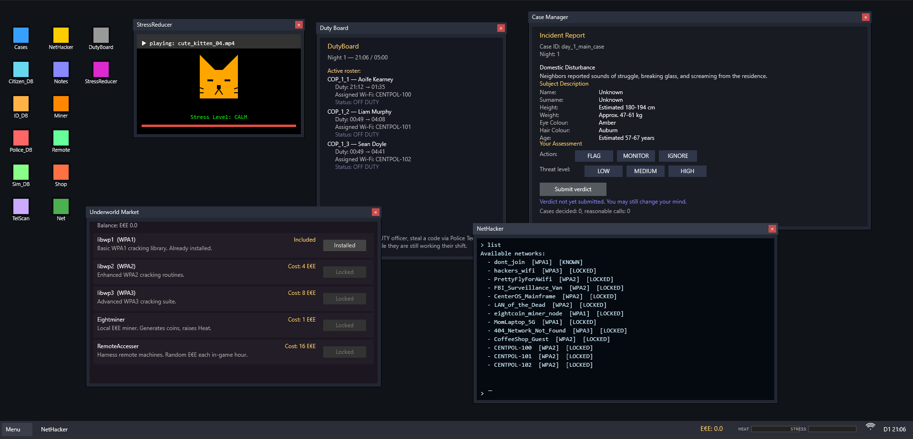

Personal Games
This page will list my personal games including arcade clones or others.
CenterOS: The Fake OS Game
It's my version of another virtual OS in JavaScript with additional features.
Ghost Muncher

My Pac-Man style clone written in JavaScript and Canvas. Still work in progress.
Putblocks

Classic falling blocks written in JavaScript + Canvas. Basically my version of Tetris clone.